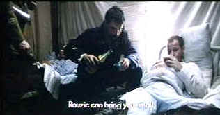

| Captaine Conan/F |
| Kino/1996/130/WS 1.90 |
What a travesty! It is seldom that a transfer is so bad that I simply cannot bear to watch the film. Such is the case with Captaine Conan. I was looking forwarding to watching Bertrand Tavernier's sweeping vision of World War I. I got through little more than a half hour. The opening battle scenes were so dark that the image was a ballet of explosions with silhouettes briefly illuminated by the flaring. I made it through the first dark night with Conan and his men, though it was almost impossible to distinguish them. Int he morning, after the battle, the picture was obviously blown out by an an overexposed black level. Too much black level and yet the night scenes were buried. Not a promising scenario.
 |
| Conan visits a comrade in hospital. ©Kino |
I changed the setting significantly on my brightness until the picture had a more natural appearance. It was not much better since I began noticing the other abominable flaws in the transfer. The entire picture was streaked by perfectly straight and evenly spaced vertical lines across the entire horizontal plane. Could this transfer have been made from a VHS tape I mused to myself. It certainly was no better than VHS. Even the burned in English subtitled suffered from a ghosting that made the letters appear three-dimensional. I was naive enough to think that perhaps this was intentional until later in the transfer the ghost image disappeared. Color is muted, there's no resolution to expand upong. Sadly, the only choice is to pas up this interesting film on DVD.

The Feature Archive
has articles ranging from Akira
Kurosawa to Blonde Bimbos.
Movie Rage: Death in the Aisles
Everyone knows what it feels like to get angry at the
movies these days. Here's a humorous but not so delightful view of big screen misery

 Have you visited Home Theater
Talk lately? One of the friendliest places on the Net for Home Theater and DVD discussion, you
can get help for installation problems or simply share your opinions with other Vidiots.
Have you visited Home Theater
Talk lately? One of the friendliest places on the Net for Home Theater and DVD discussion, you
can get help for installation problems or simply share your opinions with other Vidiots.

The National Film Preservation Foundation (NFPF) is the nonprofit organization created by the U.S. Congress to save
America's film heritage.

Excellent resource for movie review links, with many early looks.